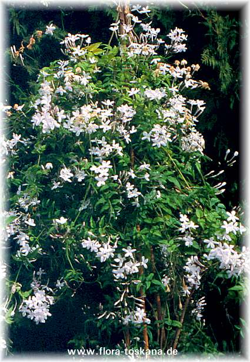
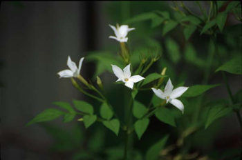

|
ECONOMICALLY
IMPORTANT PLANTS OF INDIA |
| Under-utilized Food and Fodder species and their wild relatives | Contributed by Ms.M.L Annapurna And Dr. Dhanapal, UAS, Bangalore |
Jasminum officinale

Taxonomic
Details
----- Correct Name
----- Classification
----- Synonyms
----- Common Names
Other Biological Details
----- Habit and Habitat
----- Diagnostic Features
----- Reproductive Biology
---------- Breeding System
---------- Phenology
---------- Pollinators
---------- Seed Biology
----------Seed Germination
------ Cultivation
----- Major Pests and Diseases
Economic Potential and Uses
----- Parts Used
-----Uses
----- Harvesting Practices
----- Produce and Products
----- Chemistry
----- Processing Techniques
----- Other uses
----- Economic Potential to the
Country
----- Export Potential
Miscellaneous Information
Literature
Correct
Name : Jasminum
officinale Linn.

Family : Oleaceae
Synonyms :
Common Names :
Hindi: Chameli, jati
Bengali: Chameli, jati
Malayalam: Pichakam, pichakamulla
Tamil: Manmadabanam, mullai, padar-malligai, pichi;
Telugu: Jaji, malati
Kannada: Ajjige, jaji, mallige, jati mallige.
Misc: SANS.-Chambeli, chetaki, jati, malati; GUJ.-Chambeli; PUNJAB-Chamba,
chambeli.
HABIT & HABITAT
A
twining shrub, with striate branches, considered to be a native of
Availability :
Status :
DIAGNOSTIC
FEATURES
A
large scrambling or twining shrub, considered to lie a native of N.W. Himalayas,
widely grown in gardens throughout India. Branches ribbed; leaves opposite,
imparipinnately compound: leaflets 7-11, terminal leaflet somewhat larger than
laterals: lateral leaflets sessile or shortly petiolate, distal pair with broad
connate bases confluent with the terminal. Flowers borne in lax axillary or
terminal cymes longer than leaves, white, often tinged with purple on the
outside, delightfully fragrant : bracts ovate to spathulate, oblong, foliaceous
: calyx glabrous ; lobes 5, subulate ; corolla lobes 5, elliptic or obovate :
carpels 2.
REPRODUCTIVE
BIOLOGY
Breeding System :
Phenology:
Flowering
occurs during May-June and fruiting during Nov.
Pollinators:
Snails, Ants and Honey bees.
Seed Biology :
Carpels 2, 3-4 inch long,
ellipsoidal, shining black, containing one seed surrounded by juicy purple pulp.
Seed Germination:
There is germination of
up to 80%.
MAJOR
PESTS & DISEASES
Pests:
A jasmine bug has been reported from South India : this can he controlled hy
spraying the hushes with fish oil resin soap mixture Diseases:
J. officinale and forma grandiflorum are subject to leaf and stem rust,
caused by Uromyces Jioh. wni Vize.
Parts
used
Flowers, Leaves, Roots
Uses
Harvesting Practices
Flowers gathered from high altitudes give product of superior quality, those
gathered early in the morning yield more oil of finer aroma than those picked at
Produce and Products
Hair oils and attars and perfumed oils viz., Sira()high grade, Baju(Medium grade) and Raddi(low grade ).
Processing Techniques
Flowers should be processed immediately after harvest. Jasmine perfume is
extracted from the flowers by enflenrage or by solvent extraction ;
steam-distillation gives poor yields. As the development of perfume continues
for sometime after gathering, the effleurage process gives higher yields, nearly
2 to 3 times that obtained by solvent extraction. The latter process has,
however, been found to be economical as it not only recovers practically all the
odorous" constituents but also saves labour charges. In the solvent
extraction process, the flowers are placed in a battery of closed cylinders and
the refined solvent is allowed to run through them in succession. Petroleum
ether is the solvent usually employed; benzene produces a highly coloured
product with a hard odour. The solvent is recovered by vacuum distillation and
the residue, consisting of odorous principles and waxes, constitutes the
concrete. The absolute is obtained by separating the waxy material by treatment
with high proof alcohol .The effleurage process was generally adopted, until
recently, for the extraction of perfume, particularly in
The
yield of concrete, according to Naves & Mazuyer varies from 0.28 to 0.34%.
There is a 45-53% yield of absolute and a 10 to 19% content of steam
distilla-ble substances. The yield of absolute obtained by en-fleurage is much
higher. The yield and quality of the perfume depend upon several factors:
flowers gathered from high altitudes give a product of superior quality ; those
gathered early in the morning yield more oil of a finer aroma than those picked
at noon or in the afternoon ; those gathered in warm and sunny weather give a
better yield and quality of perfume than those collected in cloudy or rainy
weather.
Flowers should be processed immediately after harvest and the temperature of
extraction kept as low as possible
Two
types of extraction methods are followed in
For the production of attars, the flowers are distilled in earthenware vessels
and the vapours absorbed in sandalwood oil. About 10 Ib. of sandalwood oil are
used for absorbing the perfume principles from 500-700 lb. of flowers. A
superior grade of attar is obtained by ageing the product for 3-4 years, fresh
jasmine extract being added every year during the ageing period
Experimental
trails have been conducted at the H.B.Technological Institute at
2.The
root is said to be used in the treatment of ringworm.
3.In
4.The
leaves are chewed for relief in cases of ulcerarion of the mucous membrane
of the mouth.
5.Fresh
juice of leaves is used as an application for corns ; an oil preparation
containing the juice is used in otorrhoea.
6.The
whole plant is considered to be anthelmintic, diuretic and emmenagogic.
7.The
scent-ed oil and attar from flowers are valued for their cooling effect in
skin diseases, headache and eye troubles.
8.The
bulk of the harvested flowers is used as such in garlands, chaplets and
decorative hunches and for religious offerings : only a small quantity is
used for the production of hair oils and attars.
9.There
is no production of jasmine oil in
The flowers vary in size, depending upon the age of the plant, cultural
practices and season. The average yield of flowers per acre in U.P. ranges from
160-280 kg. (10,000-12,000 flowers per kg.). The maximum vield reported is 400
kg. per acre. An average yield of 1.600 kg. per acre has been reported in
2.Osmaston,
A.E. (1978).
A
3.The wealth of India, A Dictionary of Indian Raw Materials and Industrial Products, Vol. V. H-K, Publications and Information Directorate, CSIR, New Delhi, India, 1959.